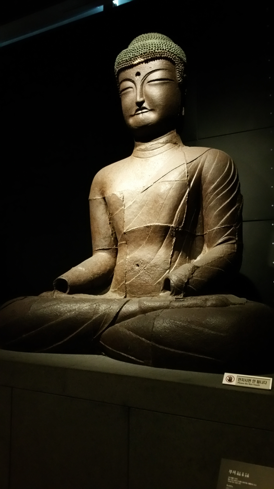

Zoey's Personal and Professional Bio
Professional Bio
My name is Zoua Thao, although I much prefer being called Zoey. I am currently a senior at the University of Minnesota, Twin Cities and majoring in Scientific and Technical Communication (STC), with a subplan in Information Technology and Design. I also have a minor in Korean. I have a passion for writing and information design, and always seek to improve as a creative communicator.
Personal Bio
Statue in National Museum of South Korea
One interesting thing about me is my strong interest in languages. My second language is Hmong and I have previously studied French, Japanese, and Korean. I also studied abroad in South Korea summer of 2015. I attended Yonsei University, one of South Korea’s top three universities. Along with studying there, I had the wonderful opportunity of working on my senior project there as well; I will be putting together a digital story to promote studying abroad in South Korea. My anticipated graduation date is December, 2015.